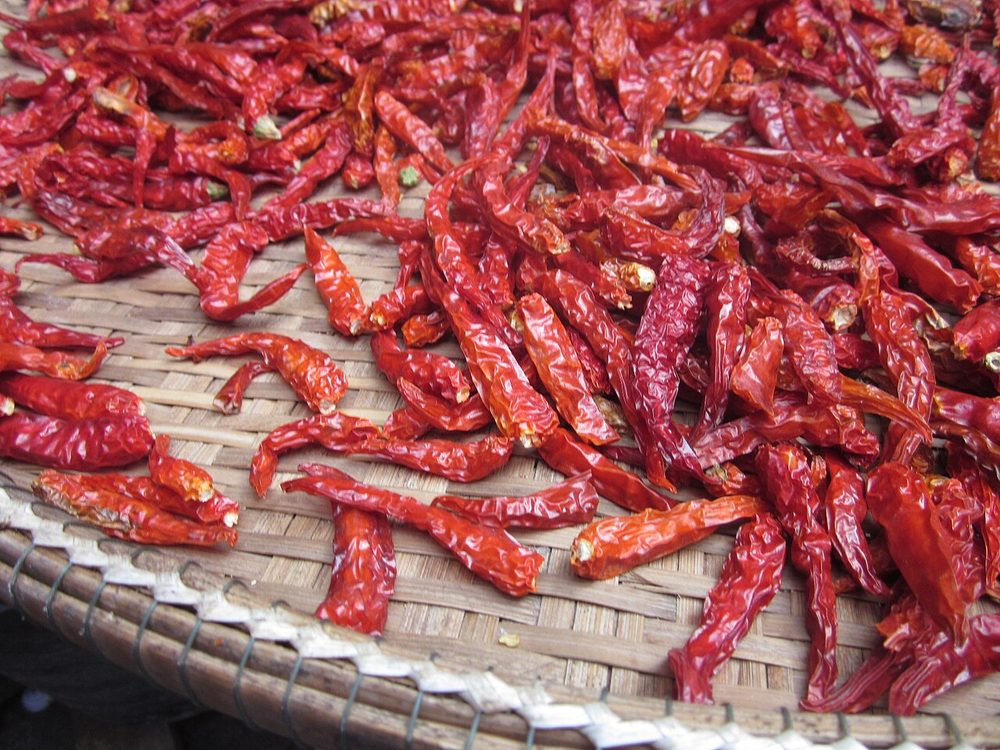

Épice
Piment
Capsicum spp. — frais ou séché
- Cycle 4 à 6 mois, récolte étalée
- Mise à jour 2026-10-21
- Niveau de confiance partiel

Présentation et utilisations
Arbuste à récolte étalée, très présent dans l'alimentation ivoirienne. Le séchage permet de lisser les ventes et d'éviter de brader au pic de production.
Climat et sols
Chaleur, bon ensoleillement, sol drainé et fertile. Sensible à l'engorgement et aux viroses transmises par les insectes.
Variétés adaptées
Le choix se fait surtout sur le piquant et la couleur attendus par le marché local ; les noms variétaux ne sont pas documentés ici. Demander des semences saines et adaptées à la zone.
Calendrier cultural
Semis en pépinière puis repiquage en saison des pluies ; récolte étalée sur plusieurs mois. La pépinière permet de gagner du temps sur les adventices.
Préparation du terrain
Pépinière sur sol fin et ombragé, puis préparation de planches drainées pour le repiquage.
Semis et plantation
Semis en pépinière, repiquage de plants vigoureux avec motte, espacement permettant la circulation de l'air.
Entretien, fertilisation, irrigation
Arrosage régulier sans excès, tuteurage léger si nécessaire, apports organiques, sarclages. Éviter les excès d'azote (feuillage, moins de fruits).
Engrais : quoi, combien, quand
Récolte étalée : la fumure se fractionne pour tenir la production jusqu'à la fin, sans relancer le feuillage au détriment des fruits.
| Apport | Dose | Quand | Comment |
|---|---|---|---|
| OrganiqueFumier ou compost | 10 à 20 t/ha | Avant la plantation | Incorporé dans les planches |
| MinéralAzote (N) | 60 à 100 kg/ha | En 3 apports (reprise, floraison, 1re récolte) | En bande |
| MinéralPhosphore (P2O5) | 40 à 60 kg/ha | À la plantation | En poquet |
| MinéralPotassium (K2O) | 60 à 100 kg/ha | Dès la floraison, en 2 fois | En bande |
| OrganiqueCendre de bois (potasse) | 1 à 2 t/ha | En complément, avant floraison | Épandue et incorporée |
Doses par hectare de culture pure, à ajuster selon l'analyse de sol. Sans analyse, rester dans la fourchette basse et fractionner l'azote : c'est le geste qui évite de brûler la culture et de payer un engrais qui ne sera pas valorisé.
Maladies, ravageurs et prévention
Viroses (feuilles déformées, mosaïque), pucerons et acariens : la prévention passe par des plants sains, l'élimination des plantes malades et la rotation. Aucun seuil documenté ici.
Récolte et post-récolte
Récolte échelonnée des fruits mûrs, à la main, avec gants. Ne pas laisser les fruits pourrir sur pied.
Conservation et transformation
Vente fraîche rapide, ou séchage complet puis stockage hermétique. Le séchage au soleil sur claie propre limite les moisissures.
Coûts, rendements et débouchés
Débouchés : frais, séché, transformation. Aucun prix vérifié. Postes de dépense : semences et pépinière, irrigation, main-d'œuvre de récolte (répétée).
Tutoriel étape par étape
- 1. Faire une pépinière
Semez en pépinière, en terre fine, avec un peu d'ombre et des arrosages réguliers ; repiquez les plants vigoureux.
- 2. Préparer la planche
Préparez une planche drainée, avec du compost mûr et assez d'espace pour que l'air circule.
- 3. Repiquer
Repiquez avec la motte, sans casser les racines, et arrosez tout de suite.
- 4. Entretenir
Arrosez régulièrement, sarclez, surveillez les pucerons et les maladies.
- 5. Récolter et sécher
Récoltez au fur et à mesure, séchez sur une claie, stockez hermétique.

Twentyfour Students from Bangkok, Thailand · CC BY-SA 2.0 · Wikimedia Commons
Sources, vérification et limites
- Base de connaissances interne · knowledge/agronomie.md (consulté le 2026-10-21)
Limites de cette fiche. Variétés, densités, rendements et prix non vérifiés. Le piquant attendu par le marché local doit être précisé avant de choisir la semence.
Dernière mise à jour : 2026-10-21. Les prix, rendements et calendriers locaux ne sont mentionnés que lorsqu'ils sont documentés ; dans le doute, la fiche le dit.